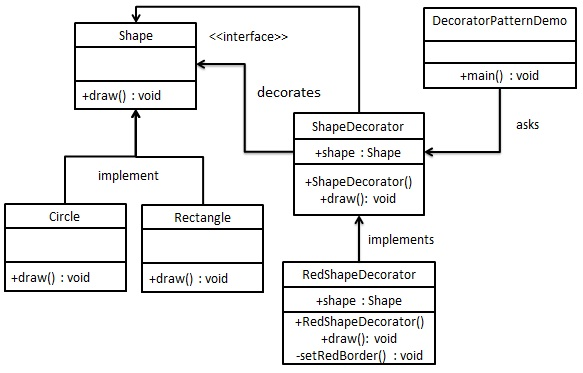
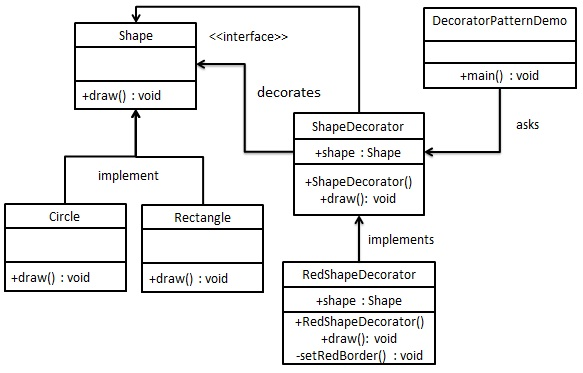

Table of Contents
装饰模式
都看装饰器这么长时间了，再来看看。
设计模式中的装饰模式
装饰模式（Decorator Pattern）指的是在不必改变原类文件和使用继承的情况下，动态地扩展一个对象的功能。它是通过创建一个包装对象，也就是装饰来包裹真实的对象。

@decorator def func(): pass 其解释器会解释成下面这样的语句： func = decorator(func)
都看装饰器这么长时间了，再来看看。
装饰模式（Decorator Pattern）指的是在不必改变原类文件和使用继承的情况下，动态地扩展一个对象的功能。它是通过创建一个包装对象，也就是装饰来包裹真实的对象。

@decorator def func(): pass 其解释器会解释成下面这样的语句： func = decorator(func)